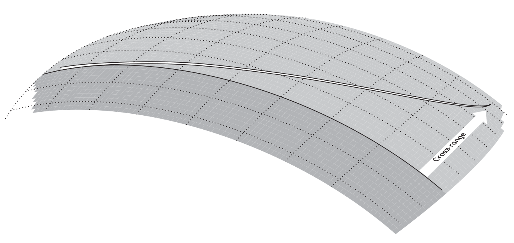

Optimal control for a Space Shuttle reentry trajectory
This tutorial was generated using Literate.jl. Download the source as a .jl file.
This tutorial was originally contributed by Henrique Ferrolho.
This tutorial demonstrates how to compute a reentry trajectory for the Space Shuttle, by formulating and solving a nonlinear programming problem. The problem was drawn from Chapter 6 of "Practical Methods for Optimal Control and Estimation Using Nonlinear Programming", by John T. Betts.
This tutorial is a more-complicated version of the Rocket Control example. If you are new to solving nonlinear programs in JuMP, you may want to start there instead.
The motion of the vehicle is defined by the following set of DAEs:
\[\begin{aligned} \dot{h} & = v \sin \gamma , \\ \dot{\phi} & = \frac{v}{r} \cos \gamma \sin \psi / \cos \theta , \\ \dot{\theta} & = \frac{v}{r} \cos \gamma \cos \psi , \\ \dot{v} & = -\frac{D}{m} - g \sin \gamma , \\ \dot{\gamma} & = \frac{L}{m v} \cos(\beta) + \cos \gamma \left ( \frac{v}{r} - \frac{g}{v} \right ) , \\ \dot{\psi} & = \frac{1}{m v \cos \gamma} L \sin(\beta) + \frac{v}{r \cos \theta} \cos \gamma \sin \psi \sin \theta , \\ q & \le q_U , \\ \end{aligned}\]
where the aerodynamic heating on the vehicle wing leading edge is $q = q_a q_r$ and the dynamic variables are
\[\begin{aligned} h & \quad \text{altitude (ft)}, \qquad & & \gamma \quad \text{flight path angle (rad)}, \\ \phi & \quad \text{longitude (rad)}, \qquad & & \psi \quad \text{azimuth (rad)}, \\ \theta & \quad \text{latitude (rad)}, \qquad & & \alpha \quad \text{angle of attack (rad)}, \\ v & \quad \text{velocity (ft/sec)}, \qquad & & \beta \quad \text{bank angle (rad)}. \end{aligned}\]
The aerodynamic and atmospheric forces on the vehicle are specified by the following quantities (English units):
\[\begin{aligned} D & = \frac{1}{2} c_D S \rho v^2, \qquad & a_0 & = -0.20704, \\ L & = \frac{1}{2} c_L S \rho v^2, \qquad & a_1 & = 0.029244, \\ g & = \mu / r^2, \qquad & \mu & = 0.14076539 \times 10^{17}, \\ r & = R_e + h, \qquad & b_0 & = 0.07854, \\ \rho & = \rho_0 \exp[-h/h_r], \qquad & b_1 & = -0.61592 \times 10^{-2}, \\ \rho_0 & = 0.002378, \qquad & b_2 & = 0.621408 \times 10^{-3}, \\ h_r & = 23800, \qquad & q_r & = 17700 \sqrt{\rho} (0.0001 v)^{3.07}, \\ c_L & = a_0 + a_1 \hat{\alpha}, \qquad & q_a & = c_0 + c_1 \hat{\alpha} + c_2 \hat{\alpha}^2 + c_3 \hat{\alpha}^3, \\ c_D & = b_0 + b_1 \hat{\alpha} + b_2 \hat{\alpha}^2, \qquad & c_0 & = 1.0672181, \\ \hat{\alpha} & = 180 \alpha / \pi, \qquad & c_1 & = -0.19213774 \times 10^{-1}, \\ R_e & = 20902900, \qquad & c_2 & = 0.21286289 \times 10^{-3}, \\ S & = 2690, \qquad & c_3 & = -0.10117249 \times 10^{-5}. \end{aligned}\]
The reentry trajectory begins at an altitude where the aerodynamic forces are quite small with a weight of $w = 203000$ (lb) and mass $m = w / g_0$ (slug), where $g_0 = 32.174$ (ft/sec$^2$). The initial conditions are as follows:
\[\begin{aligned} h & = 260000 \text{ ft}, \qquad & v & = 25600 \text{ ft/sec}, \\ \phi & = 0 \text{ deg}, \qquad & \gamma & = -1 \text{ deg}, \\ \theta & = 0 \text{ deg}, \qquad & \psi & = 90 \text{ deg}. \end{aligned}\]
The final point on the reentry trajectory occurs at the unknown (free) time $t_F$, at the so-called terminal area energy management (TAEM) interface, which is defined by the conditions
\[h = 80000 \text{ ft}, \qquad v = 2500 \text{ ft/sec}, \qquad \gamma = -5 \text{ deg}.\]
As explained in the book, our goal is to maximize the final cross-range, which is equivalent to maximizing the final latitude of the vehicle, that is, $J = \theta(t_F)$.

Approach
We will use a discretized model of time, with a fixed number of discretized points, $n$. The decision variables at each point are going to be the state of the vehicle and the controls commanded to it. In addition, we will also make each time step size $\Delta t$ a decision variable; that way, we can either fix the time step size easily, or allow the solver to fine-tune the duration between each adjacent pair of points. Finally, in order to approximate the derivatives of the problem dynamics, we will use either rectangular or trapezoidal integration.
Do not try to actually land a Space Shuttle using this notebook. There's no mesh refinement going on, which can lead to unrealistic trajectories having position and velocity errors with orders of magnitude $10^4$ ft and $10^2$ ft/sec, respectively.
using JuMP
import Interpolations
import Ipopt
# Global variables
const w = 203000.0 # weight (lb)
const g₀ = 32.174 # acceleration (ft/sec^2)
const m = w / g₀ # mass (slug)
# Aerodynamic and atmospheric forces on the vehicle
const ρ₀ = 0.002378
const hᵣ = 23800.0
const Rₑ = 20902900.0
const μ = 0.14076539e17
const S = 2690.0
const a₀ = -0.20704
const a₁ = 0.029244
const b₀ = 0.07854
const b₁ = -0.61592e-2
const b₂ = 0.621408e-3
const c₀ = 1.0672181
const c₁ = -0.19213774e-1
const c₂ = 0.21286289e-3
const c₃ = -0.10117249e-5
# Initial conditions
const h_s = 2.6 # altitude (ft) / 1e5
const ϕ_s = deg2rad(0) # longitude (rad)
const θ_s = deg2rad(0) # latitude (rad)
const v_s = 2.56 # velocity (ft/sec) / 1e4
const γ_s = deg2rad(-1) # flight path angle (rad)
const ψ_s = deg2rad(90) # azimuth (rad)
const α_s = deg2rad(0) # angle of attack (rad)
const β_s = deg2rad(0) # bank angle (rad)
const t_s = 1.00 # time step (sec)
# Final conditions, the so-called Terminal Area Energy Management (TAEM)
const h_t = 0.8 # altitude (ft) / 1e5
const v_t = 0.25 # velocity (ft/sec) / 1e4
const γ_t = deg2rad(-5) # flight path angle (rad)
# Number of mesh points (knots) to be used
const n = 503
# Integration scheme to be used for the dynamics
const integration_rule = "rectangular"Picking a good linear solver is extremely important to maximize the performance of nonlinear solvers. For the best results, it is advised to experiment different linear solvers.
For example, the linear solver MA27 is outdated and can be quite slow. MA57 is a much better alternative, especially for highly-sparse problems (such as trajectory optimization problems).
# Uncomment the lines below to pass user options to the solver
user_options = (
# "mu_strategy" => "monotone",
# "linear_solver" => "ma27",
)
# Create JuMP model, using Ipopt as the solver
model = Model(optimizer_with_attributes(Ipopt.Optimizer, user_options...))
@variables(model, begin
0 ≤ scaled_h[1:n] # altitude (ft) / 1e5
ϕ[1:n] # longitude (rad)
deg2rad(-89) ≤ θ[1:n] ≤ deg2rad(89) # latitude (rad)
1e-4 ≤ scaled_v[1:n] # velocity (ft/sec) / 1e4
deg2rad(-89) ≤ γ[1:n] ≤ deg2rad(89) # flight path angle (rad)
ψ[1:n] # azimuth (rad)
deg2rad(-90) ≤ α[1:n] ≤ deg2rad(90) # angle of attack (rad)
deg2rad(-89) ≤ β[1:n] ≤ deg2rad(1) # bank angle (rad)
# 3.5 ≤ Δt[1:n] ≤ 4.5 # time step (sec)
Δt[1:n] == 4.0 # time step (sec)
end);Above you can find two alternatives for the Δt variables.
The first one, 3.5 ≤ Δt[1:n] ≤ 4.5 (currently commented), allows some wiggle room for the solver to adjust the time step size between pairs of mesh points. This is neat because it allows the solver to figure out which parts of the flight require more dense discretization than others. (Remember, the number of discretized points is fixed, and this example does not implement mesh refinement.) However, this makes the problem more complex to solve, and therefore leads to a longer computation time.
The second line, Δt[1:n] == 4.0, fixes the duration of every time step to exactly 4.0 seconds. This allows the problem to be solved faster. However, to do this we need to know beforehand that the close-to-optimal total duration of the flight is ~2009 seconds. Therefore, if we split the total duration in slices of 4.0 seconds, we know that we require n = 503 knots to discretize the whole trajectory.
# Fix initial conditions
fix(scaled_h[1], h_s; force = true)
fix(ϕ[1], ϕ_s; force = true)
fix(θ[1], θ_s; force = true)
fix(scaled_v[1], v_s; force = true)
fix(γ[1], γ_s; force = true)
fix(ψ[1], ψ_s; force = true)
# Fix final conditions
fix(scaled_h[n], h_t; force = true)
fix(scaled_v[n], v_t; force = true)
fix(γ[n], γ_t; force = true)
# Initial guess: linear interpolation between boundary conditions
x_s = [h_s, ϕ_s, θ_s, v_s, γ_s, ψ_s, α_s, β_s, t_s]
x_t = [h_t, ϕ_s, θ_s, v_t, γ_t, ψ_s, α_s, β_s, t_s]
interp_linear = Interpolations.LinearInterpolation([1, n], [x_s, x_t])
initial_guess = mapreduce(transpose, vcat, interp_linear.(1:n))
set_start_value.(all_variables(model), vec(initial_guess))
# Functions to restore `h` and `v` to their true scale
@expression(model, h[j = 1:n], scaled_h[j] * 1e5)
@expression(model, v[j = 1:n], scaled_v[j] * 1e4)
# Helper functions
@expression(model, c_L[j = 1:n], a₀ + a₁ * rad2deg(α[j]))
@expression(model, c_D[j = 1:n], b₀ + b₁ * rad2deg(α[j]) + b₂ * rad2deg(α[j])^2)
@expression(model, ρ[j = 1:n], ρ₀ * exp(-h[j] / hᵣ))
@expression(model, D[j = 1:n], 0.5 * c_D[j] * S * ρ[j] * v[j]^2)
@expression(model, L[j = 1:n], 0.5 * c_L[j] * S * ρ[j] * v[j]^2)
@expression(model, r[j = 1:n], Rₑ + h[j])
@expression(model, g[j = 1:n], μ / r[j]^2)
# Motion of the vehicle as a differential-algebraic system of equations (DAEs)
@expression(model, δh[j = 1:n], v[j] * sin(γ[j]))
@expression(
model,
δϕ[j = 1:n],
(v[j] / r[j]) * cos(γ[j]) * sin(ψ[j]) / cos(θ[j])
)
@expression(model, δθ[j = 1:n], (v[j] / r[j]) * cos(γ[j]) * cos(ψ[j]))
@expression(model, δv[j = 1:n], -(D[j] / m) - g[j] * sin(γ[j]))
@expression(
model,
δγ[j = 1:n],
(L[j] / (m * v[j])) * cos(β[j]) +
cos(γ[j]) * ((v[j] / r[j]) - (g[j] / v[j]))
)
@expression(
model,
δψ[j = 1:n],
(1 / (m * v[j] * cos(γ[j]))) * L[j] * sin(β[j]) +
(v[j] / (r[j] * cos(θ[j]))) * cos(γ[j]) * sin(ψ[j]) * sin(θ[j])
)
# System dynamics
for j in 2:n
i = j - 1 # index of previous knot
if integration_rule == "rectangular"
# Rectangular integration
@constraint(model, h[j] == h[i] + Δt[i] * δh[i])
@constraint(model, ϕ[j] == ϕ[i] + Δt[i] * δϕ[i])
@constraint(model, θ[j] == θ[i] + Δt[i] * δθ[i])
@constraint(model, v[j] == v[i] + Δt[i] * δv[i])
@constraint(model, γ[j] == γ[i] + Δt[i] * δγ[i])
@constraint(model, ψ[j] == ψ[i] + Δt[i] * δψ[i])
elseif integration_rule == "trapezoidal"
# Trapezoidal integration
@constraint(model, h[j] == h[i] + 0.5 * Δt[i] * (δh[j] + δh[i]))
@constraint(model, ϕ[j] == ϕ[i] + 0.5 * Δt[i] * (δϕ[j] + δϕ[i]))
@constraint(model, θ[j] == θ[i] + 0.5 * Δt[i] * (δθ[j] + δθ[i]))
@constraint(model, v[j] == v[i] + 0.5 * Δt[i] * (δv[j] + δv[i]))
@constraint(model, γ[j] == γ[i] + 0.5 * Δt[i] * (δγ[j] + δγ[i]))
@constraint(model, ψ[j] == ψ[i] + 0.5 * Δt[i] * (δψ[j] + δψ[i]))
else
@error "Unexpected integration rule '$(integration_rule)'"
end
end
# Objective: Maximize cross-range
@objective(model, Max, θ[n])
set_silent(model) # Hide solver's verbose output
optimize!(model) # Solve for the control and state
@assert termination_status(model) == LOCALLY_SOLVED
# Show final cross-range of the solution
println(
"Final latitude θ = ",
round(objective_value(model) |> rad2deg; digits = 2),
"°",
)Final latitude θ = 34.18°Plotting the results
Let's plot the results to visualize the optimal trajectory:
using Plots
ts = cumsum([0; value.(Δt)])[1:end-1]
plt_altitude = plot(
ts,
value.(scaled_h);
legend = nothing,
title = "Altitude (100,000 ft)",
)
plt_longitude =
plot(ts, rad2deg.(value.(ϕ)); legend = nothing, title = "Longitude (deg)")
plt_latitude =
plot(ts, rad2deg.(value.(θ)); legend = nothing, title = "Latitude (deg)")
plt_velocity = plot(
ts,
value.(scaled_v);
legend = nothing,
title = "Velocity (1000 ft/sec)",
)
plt_flight_path =
plot(ts, rad2deg.(value.(γ)); legend = nothing, title = "Flight Path (deg)")
plt_azimuth =
plot(ts, rad2deg.(value.(ψ)); legend = nothing, title = "Azimuth (deg)")
plot(
plt_altitude,
plt_velocity,
plt_longitude,
plt_flight_path,
plt_latitude,
plt_azimuth;
layout = grid(3, 2),
linewidth = 2,
size = (700, 700),
)function q(h, v, a)
ρ(h) = ρ₀ * exp(-h / hᵣ)
qᵣ(h, v) = 17700 * √ρ(h) * (0.0001 * v)^3.07
qₐ(a) = c₀ + c₁ * rad2deg(a) + c₂ * rad2deg(a)^2 + c₃ * rad2deg(a)^3
# Aerodynamic heating on the vehicle wing leading edge
return qₐ(a) * qᵣ(h, v)
end
plt_attack_angle = plot(
ts[1:end-1],
rad2deg.(value.(α)[1:end-1]);
legend = nothing,
title = "Angle of Attack (deg)",
)
plt_bank_angle = plot(
ts[1:end-1],
rad2deg.(value.(β)[1:end-1]);
legend = nothing,
title = "Bank Angle (deg)",
)
plt_heating = plot(
ts,
q.(value.(scaled_h) * 1e5, value.(scaled_v) * 1e4, value.(α));
legend = nothing,
title = "Heating (BTU/ft/ft/sec)",
)
plot(
plt_attack_angle,
plt_bank_angle,
plt_heating;
layout = grid(3, 1),
linewidth = 2,
size = (700, 700),
)plot(
rad2deg.(value.(ϕ)),
rad2deg.(value.(θ)),
value.(scaled_h);
linewidth = 2,
legend = nothing,
title = "Space Shuttle Reentry Trajectory",
xlabel = "Longitude (deg)",
ylabel = "Latitude (deg)",
zlabel = "Altitude (100,000 ft)",
)